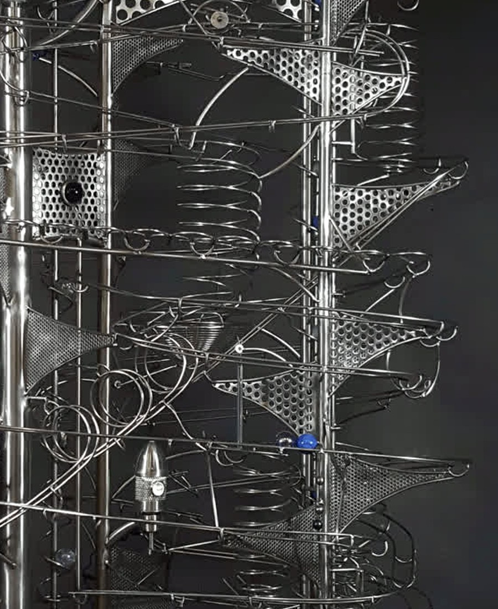

Frequently asked questions
Curiosity is
part of the work.
How the sculptures move, how they are made, what they require and how an original commission begins.

01What is a rolling ball sculpture?
02How long does a sculpture take to build?
03Are the sculptures handmade?
04What materials are used?
05Do the sculptures require maintenance?
06Can the work be shipped internationally?
07Can a sculpture be designed for a particular space?
08How do I begin a commission?
09When is price confirmed for a commission?
10What happens before a completed work is shipped?
11Can a rolling ball sculpture be wall-mounted?
+
A work can be discussed as wall-mounted, freestanding or tabletop depending on its scale, structure and intended location. Photographs and measurements help determine the appropriate direction.
12Do rolling ball sculptures make sound?
+
The moving marbles and mechanisms naturally create sound. The character and level of sound depend on the sculpture, materials, speed and room, so this should be considered when planning a home, office or public setting.
13Do motorized sculptures need power?
+
Motorized works require a suitable power connection. Voltage, adapter, cable route, speed control, lighting and activation features are confirmed for the specific sculpture or commission.
14Can a sculpture be designed for an office, hotel or public space?
+
Yes. A professional project can consider visitor flow, viewing distance, scale, sound, power, durability, installation, maintenance and the experience the organization wants to create.
15How is the price of a commission decided?
+
Price is confirmed after the intended scale, complexity, materials, mechanisms, timeline, delivery and installation needs are understood and a concept direction has been discussed.
16Can Robert reproduce a sculpture that has already sold?
+
Every sculpture is an original. A past work can inspire discussion about scale, movement, materials or character, but a new commission would be developed as a distinct work rather than an exact copy.